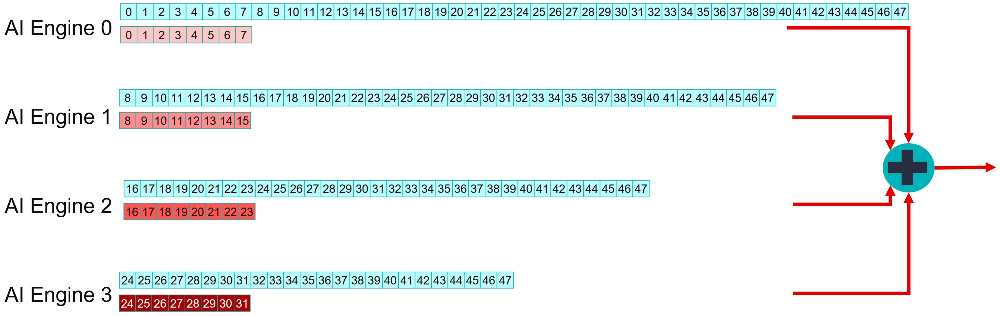
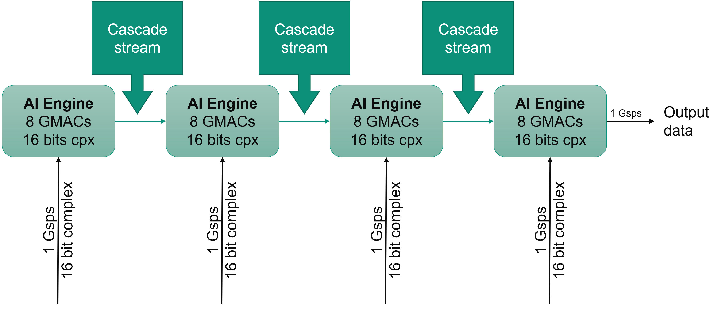
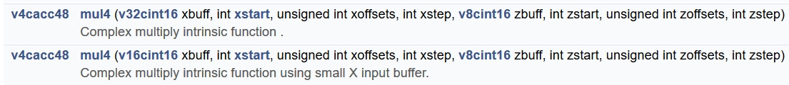
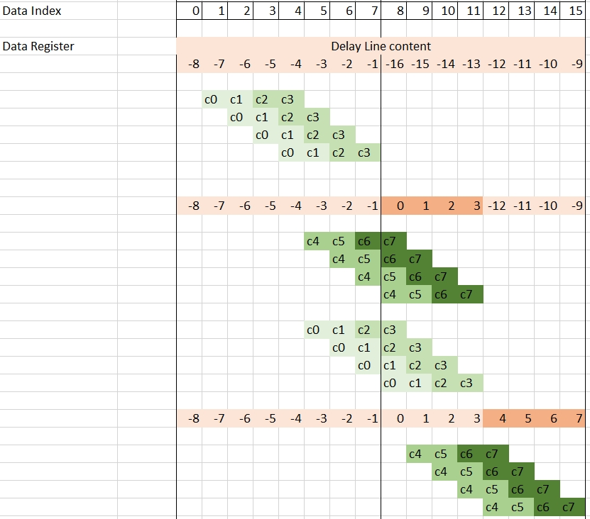
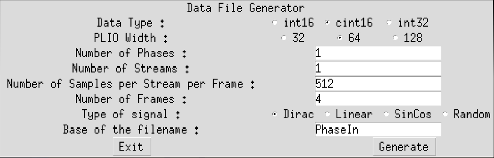
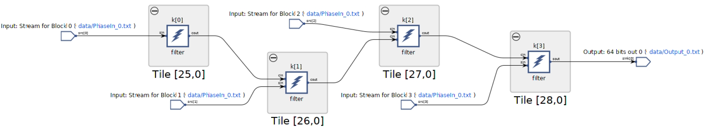
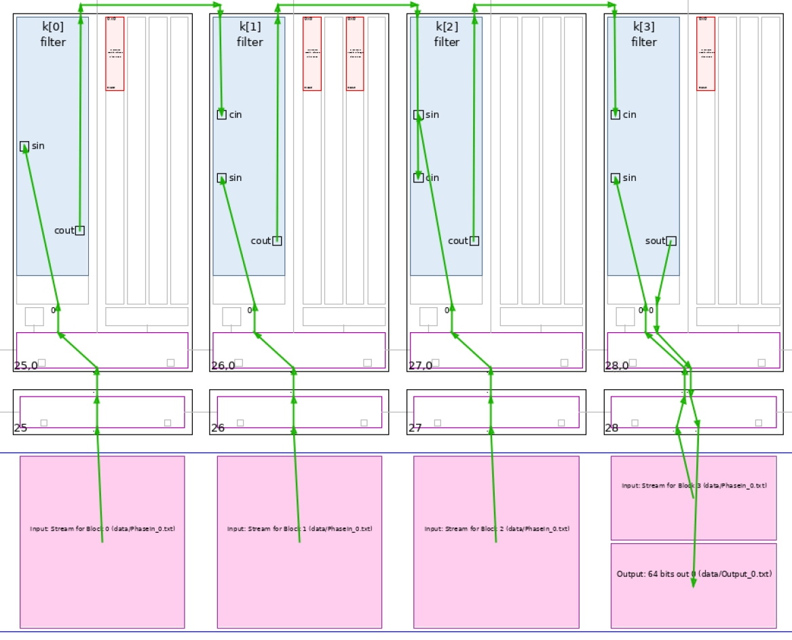
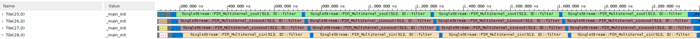
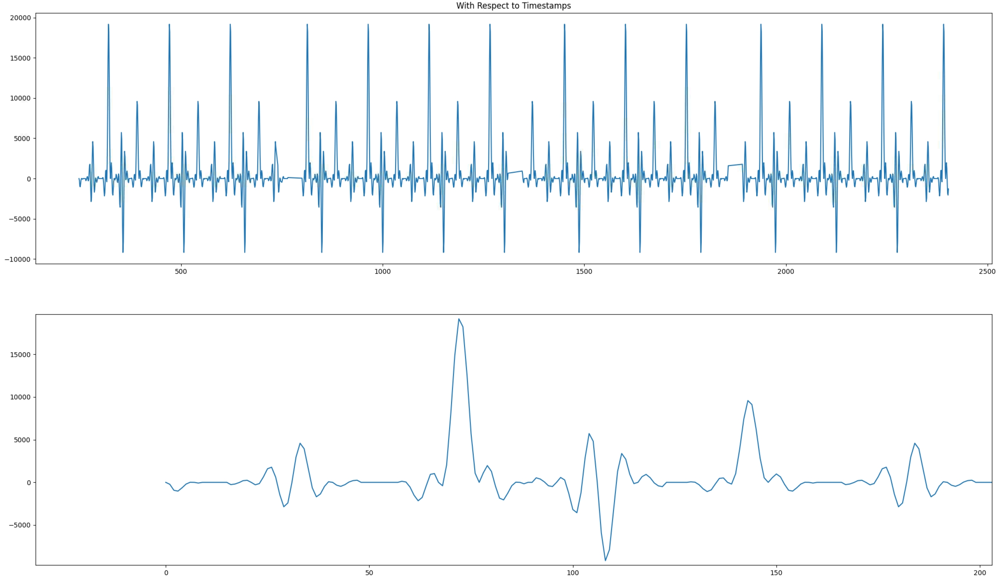

In this second part of the tutorial you will dispatch the computations over multiple AI Engines and analyze the performances that can be achieved.
Navigate to the MultiKernel directory to continue.
As in the Single-kernel tutorial, this design will use streaming input and output but the performances must be improved. Limitations can come from two sources:
Limit on the bandwidth side
Limit in the compute performance side
In the single-kernel section of the tutorial the maximum throughput was 225 Msps, which shows that the streams are starved due to a limitation of the compute performance. The data type cint16 is 32-bit wide and the maximum bandwidth of the AXI-Stream connection array is 1x cint16 per clock cycle on a single stream. In the single-kernel part, four of them were read in four clock cycles, but the computation was taking 16 clock cycles for the 32 taps. For the optimal trade-off, the computation should take only four clock cycles for each of the four input samples read from the stream. In four clock cycles, eight taps can be processed, the complete filtering operation should be split onto four AI Engines.
The Single-Kernel Filter can be represented by this convolution:

After subdivision into four Kernels, each one on a different AI Engine, the filter can be represented by four smaller filters in parallel running on the same data stream, except that for some of these kernels the beginning of the stream is discarded:

The four AI Engines each perform the computations for a subset of the coefficients. Their results must be added together to get the overall result. The AI Engine architecture allows a number of accumulators to be sent to a neighboring AI Engine to be used as a starting point for a number of mac operations. For computations being performed on four lanes, the accumulator vector is v4cacc48, which is a 384 bit vector that can be sent to the next AI Engine in the chain in one clock cycle.

As shown in the previous figure, there are three different types of kernels that differ from their interface:
| Location | Inputs | Output |
|---|---|---|
| First block | Stream In | Cascade Out |
| Middle Block | Stream In Cascade In |
Cascade Out |
| Last Block | Stream In Cascade In |
Stream Out |
They have been named with respect to their cascade connection structure:
FIR_MultiKernel_cout
FIR_MultiKernel_cincout
FIR_MultiKernel_cincout
The class declaration for the first one is:
template<int NSamples,int ShiftAcc>
class FIR_MultiKernel_cout {
private:
alignas(32) cint16 weights[8];
alignas(32) cint16 delay_line[16];
public:
FIR_MultiKernel_cout(const cint16 (&taps)[8])
{
for(int i=0;i<8;i++) weights[i] = taps[i];
for(int i=0;i<16;i++) delay_line[i] = (cint16){0,0};
};
void filter(input_stream_cint16* sin,output_stream_cacc48* cout);
static void registerKernelClass()
{
REGISTER_FUNCTION(FIR_MultiKernel_cout::filter);
};
};
The difference between the single-kernel case and this case is that the tap array contains eight elements and that the delay line is only 16 element deep. In the previous section you saw that there were only two mul4 and mac4 intrinsics for cint16 x cint16 operations.

More interestingly is the one that uses a v16cint16 for the data register. Filter output compute for an eight tap filter on four lanes in parallel requires (8+3 = 11) data in the buffer. The delay-line should contain at least eight samples as the seven previous samples will be needed for the computation of the first output.
The following image gives an idea of data update scheduling and how it is interleaved with mul4/mac4 operations (only the first eight outputs).

The related C++ code is as follows:
void SingleStream::FIR_MultiKernel_cout<NSamples,ShiftAcc>::filter(input_stream_cint16* sin,output_stream_cacc48* cout)
{
v8cint16 taps = *(v8cint16*) weights;
v16cint16 *ptr_delay_line = (v16cint16 *)delay_line;
v16cint16 data = *ptr_delay_line;
v4cacc48 acc = undef_v4cacc48();
// Computes 16 samples per iteration
for(int i=0;i<NSamples/16;i++)
chess_prepare_for_pipelining
chess_loop_range(NSamples/16,NSamples/16)
{
acc = mul4(data,1,0x3210,1,taps,0,0x0000,1);
acc = mac4(acc,data,3,0x3210,1,taps,2,0x0000,1);
data = upd_v(data, 2, readincr_v4(sin));
acc = mac4(acc,data,5,0x3210,1,taps,4,0x0000,1);
acc = mac4(acc,data,7,0x3210,1,taps,6,0x0000,1);
writeincr_v4(cout,acc);
acc = mul4(data,5,0x3210,1,taps,0,0x0000,1);
acc = mac4(acc,data,7,0x3210,1,taps,2,0x0000,1);
data = upd_v(data, 3, readincr_v4(sin));
acc = mac4(acc,data,9,0x3210,1,taps,4,0x0000,1);
acc = mac4(acc,data,11,0x3210,1,taps,6,0x0000,1);
writeincr_v4(cout,acc);
acc = mul4(data,9,0x3210,1,taps,0,0x0000,1);
acc = mac4(acc,data,11,0x3210,1,taps,2,0x0000,1);
data = upd_v(data, 0, readincr_v4(sin));
acc = mac4(acc,data,13,0x3210,1,taps,4,0x0000,1);
acc = mac4(acc,data,15,0x3210,1,taps,6,0x0000,1);
writeincr_v4(cout,acc);
acc = mul4(data,13,0x3210,1,taps,0,0x0000,1);
acc = mac4(acc,data,15,0x3210,1,taps,2,0x0000,1);
data = upd_v(data, 1, readincr_v4(sin));
acc = mac4(acc,data,1,0x3210,1,taps,4,0x0000,1);
acc = mac4(acc,data,3,0x3210,1,taps,6,0x0000,1);
writeincr_v4(cout,acc);
}
*ptr_delay_line = data;
}
This code is the one of FIR_MultiKernel_cout, the output is sent to the cascade stream using the writeincr_v4(cout,acc) instruction.
At the graph level, all kernels are first declared in a class:
class FIRGraph_4Kernels: public adf::graph
{
private:
kernel k[4];
public:
input_port in[4];
output_port out;
The constructor takes charge of the next operations. The first operation is to create the kernels: 1xFIR_MultiKernel_cout, 2xFIR_MultiKernel_cincout, 1xFIR_MultiKernel_cin
FIRGraph_4Kernels()
{
k[0] = kernel::create_object<SingleStream::FIR_MultiKernel_cout<NUM_SAMPLES,SHIFT>>(taps4_0);
k[1] = kernel::create_object<SingleStream::FIR_MultiKernel_cincout<NUM_SAMPLES,SHIFT>>(taps4_1);
k[2] = kernel::create_object<SingleStream::FIR_MultiKernel_cincout<NUM_SAMPLES,SHIFT>>(taps4_2);
k[3] = kernel::create_object<SingleStream::FIR_MultiKernel_cin<NUM_SAMPLES,SHIFT>>(taps4_3);
The AI Engine compiler needs to know the location of the source code for the kernels:
const int NChunks = 4;
for(int i=0;i<NChunks;i++)
{
runtime<ratio>(k[i]) = 0.9;
source(k[i]) = "aie_kernels/FirSingleStream.cpp";
headers(k[i]) = {"aie_kernels/FirSingleStream.h"};
}
To shorten the place time by a few seconds, you can constrain the core location. A single one is necessary because all the others will be constrained by the cascade connection:
// Constraints: location of the first kernel in the cascade
location<kernel>(k[0]) = tile(25,0);
All the kernels need to discard a specific number of elements. This will be handled by the initialization function as this must be done beforehand and only once:
// Discard first elements of the stream, depending on position in the cascade
initialization_function(k[0]) = "SingleStream::FIRinit<0>";
initialization_function(k[1]) = "SingleStream::FIRinit<8>";
initialization_function(k[2]) = "SingleStream::FIRinit<16>";
initialization_function(k[3]) = "SingleStream::FIRinit<24>";
Finally, all kernels must be connected together. This is done at the end of the constructor of the class:
// Cascade Connections and output connection
for(int i=0;i<NChunks-1;i++)
connect<cascade> (k[i].out[0],k[i+1].in[1]);
connect<stream> (k[NChunks-1].out[0],out);
// Input Streams connections
for(int i=0;i<NChunks;i++)
connect<stream>(in[i],k[i].in[0]);
The initialization function is very simple. It simply reads data from the input stream. Because there is no argument, the raw API for stream access must be used:
template<int Delay>
void SingleStream::FIRinit()
{
for (int i = 0; i < Delay; ++i)
{
get_ss(0);
}
}
Ensure that the InitPythonPath has been sourced in the Utils directory.
Navigate to the MultiKernel directory. In the Makefile three methods are defined:
aie
Compiles the graph and the kernels
aiesim
Runs the AI Engine System C simulator
aieviz
Runs vitis_analyzer on the output summary
Have a look at the source code (kernel and graph) to familiarize yourself with the C++ instantiation of kernels. In graph.cpp the PL AI Engine connections are declared using 64-bit interfaces running at 500 MHz, allowing for maximum bandwidth on the AI Engine array AXI-Stream network.
To have the simulation running, input data must be generated. There are 2 possibilities:
Just type make data
Change directory to data and type GenerateStreams. The following parameters should be set for this example:

Click Generate then Exit. The generated file PhaseIn_0.txt should contain mainly 0’s, with a few 1’s and 10’s.
Type make all and wait for vitis_analyzer GUI to display. The Vitis analyzer is able to show the graph, how it has been implemented in the device, and the complete timeline of the simulation. In this specific case the graph is very simple (a single kernel) and the implementation is on a single AI Engine.
Click Graph to visualize the graph of the application:

The four kernels and their four independent input streams are clearly visible. A single input with a FIFO of eight between each AI Engine can also be implemented.
Click Array to visualize where the kernel has been placed, and how it is fed from the the PL:

In this view the cascade streams connecting neighboring AI Engines are key to the performance of this graph.
Finally click Trace to look at how the entire simulation went through. This may be useful to track where your AI Engine stalls if performance is not as expected:

Now the output of the filter can be displayed. The input being a set of Dirac impulses, the impulse response of the filter should be recognized throughout the waveform. Navigate to Emulation-AIE/aiesimulator_output/data and look at the Output_0.txt. You can see that you have two complex outputs per line which is prepended with a time stamp. ProcessAIEOutput Output_0.txt.

The top graph reflects the outputs where the abscissa is the time at which this output occured. The four frames are clearly localized; there is no output for a number of clock cycles. On the bottom graph, a zoom on the output is displayed and the filter impulse response is recognizable.
The performance of this architecture can be measured using the timestamped output. In the same directory (Emulation-AIE/aiesimulator_output/data) type StreamThroughput Output_0.txt:
Output_0.txt --> 951.67 Msps
-----------------------
Total Throughput --> 951.67 Msps
This architecture achieves very close to 1 Gsps performance. It is slightly less because of the number of cycles spent for initialization when the kernels are called (the quiet zones in the output graph). This performance increases when the frame length is increased.
Copyright© 2020–2021 Xilinx
XD020